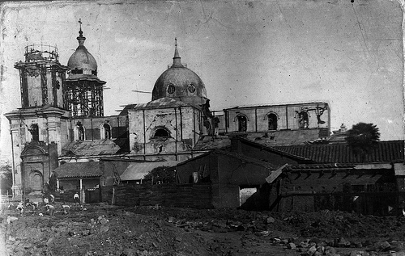
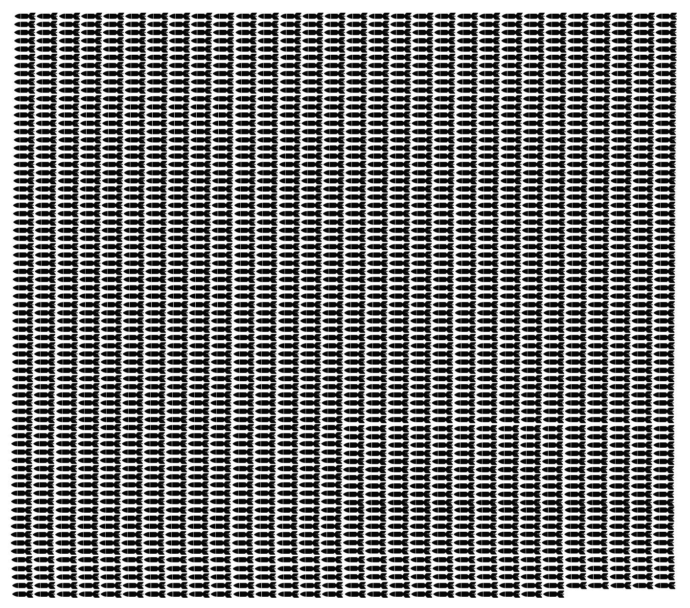

Inicio
Terremoto de 1928

Se concentró principalmente en la ciudad de Talca. Más información en la tabla a continuación.
Lugar
Fecha
Magnitud
Muertos
Damnificados
Total Energía Liberada (Megatonelada)
Talca
01-12-1928
8,3 Richter - 10 Mercalli
225
127.043
42,5
¿A qué equivale esa energía liberada? Equivale a 2125 bombas de Hiroshima. O sea...
